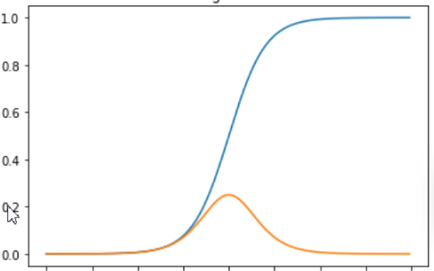

激活函数有两类：饱和激活函数”和“非饱和激活函数”。sigmoid 和tanh 是“饱和激活函数”而ReLU 及其变体则是“非饱和激活函数”。使用“非饱和激活函数”的优势在于两点：
首先，“非饱和激活函数”能解决所谓的“梯度消失”问题。
其次，它能加快收敛速度。
ReLU提供了一种非常简单的非线性变换。 给定元素x，ReLU函数被定义为该元素与0的最大值：
R e L U ( x ) = m a x ( x , 0 ) . {ReLU}(x) = max(x, 0).
R e L U ( x ) = m a x ( x , 0 ) .
ReLU函数通过将相应的活性值设为0，仅保留正元素并丢弃所有负元素。
使用ReLU的原因是，它求导表现得特别好：要么让参数消失，要么让参数通过。 这使得优化表现得更好，并且ReLU减轻了困扰以往神经网络的梯度消失问题
缺点：
变体：
Leaky ReLU：Leaky ReLU在负输入部分引入了一个小的非零斜率。 其中，α \alpha α
LeakyReLU ( x ) = max ( α x , x ) \text{LeakyReLU} (x) = \max(\alpha x, x)
LeakyReLU ( x ) = max ( α x , x )
参数化ReLU（Parameterized ReLU，pReLU） 函数：Leaky ReLU的推广，其中α \alpha α α \alpha α
p R e L U ( x ) = m a x ( 0 , x ) + α min ( 0 , x ) . {pReLU}(x) = max(0, x) + \alpha \min(0, x).
p R e L U ( x ) = m a x ( 0 , x ) + α min ( 0 , x ) .
随机纠正线性单元（）：Leaky ReLU的一个变体。在RReLU中，负值的斜率在训练中是随机的，在之后的测试中就变成了固定的了。
Exponential Linear Unit (ELU)：ELU是另一种尝试解决ReLU非零中心输出问题的激活函数。其在负值输入时采用指数衰减.它试图将激活函数的平均值接近零，从而加快学习的速度。同时，它还能通过正值的标识来避免梯度消失的问题。：
E L U ( x ) = { x x > 0 α ( e x − 1 ) x ≤ 0 ELU(x) = \left\{\begin{matrix} x&x>0 \\ \alpha (e^{x}-1) & x\leq 0 \end{matrix}\right.
E L U ( x ) = { x α ( e x − 1 ) x > 0 x ≤ 0
ELU函数的特点：
没有Dead ReLU问题，输出的平均值接近0，以0为中心。
ELU 通过减少偏置偏移的影响，使正常梯度更接近于单位自然梯度，从而使均值向零加速学习。
ELU函数在较小的输入下会饱和至负值，从而减少前向传播的变异和信息。
ELU函数的计算强度更高。与Leaky ReLU类似，尽管理论上比ReLU要好，但目前在实践中没有充分的证据表明ELU总是比ReLU好。
1 2 3 4 5 6 7 8 9 10 11 import torchform torch import nn torch.relu(x) relu = nn.ReLU() m = nn.LeakyReLU(0.1 ) m = nn.PReLU() m = nn.RReLU(0.1 , 0.3 ) m = nn.ELU()
sigmoid函数将输入变换为区间(0, 1)上的输出。 因此，sigmoid通常称为挤压函数（squashing function）： 它将范围（-inf, inf）中的任意输入压缩到区间（0, 1）中的某个值：
sigmoid ( x ) = 1 1 + exp ( − x ) . \operatorname{sigmoid}(x) = \frac{1}{1 + \exp(-x)}.
s i g m o i d ( x ) = 1 + exp ( − x ) 1 .
当我们想要将输出视作二元分类问题的概率时， sigmoid仍然被广泛用作输出单元上的激活函数 （sigmoid可以视为softmax的特例）。 然而，sigmoid在隐藏层中已经较少使用， 它在大部分时候被更简单、更容易训练的ReLU所取代。

Sigmoid函数的特性与优缺点：
Sigmoid函数的输出范围是0到1。由于输出值限定在0到1，因此它对每个神经元的输出进行了归一化。
用于将预测概率作为输出的模型。由于概率的取值范围是0到1，因此Sigmoid函数非常合适
梯度平滑，避免跳跃的输出值
函数是可微的。这意味着可以找到任意两个点的Sigmoid曲线的斜率
明确的预测，即非常接近1或0。
函数输出不是以0为中心的，这会降低权重更新的效率
Sigmoid函数执行指数运算，计算机运行得较慢。
1 2 3 4 import torchform torch import nn m = nn.Sigmoid()
tanh(双曲正切)函数也能将其输入压缩转换到区间(-1, 1)上,公式如下：
tanh ( x ) = 1 − exp ( − 2 x ) 1 + exp ( − 2 x ) . \operatorname{tanh}(x) = \frac{1 - \exp(-2x)}{1 + \exp(-2x)}.
t a n h ( x ) = 1 + exp ( − 2 x ) 1 − exp ( − 2 x ) .
注意，当输入在0附近时，tanh函数接近线性变换。 函数的形状类似于sigmoid函数， 不同的是tanh函数关于坐标系原点中心对称。它解决了Sigmoid函数的不以0为中心输出问题，然而，梯度消失的问题和幂运算的问题仍然存在。
1 2 3 4 import torchform torch import nn m = nn.Tanh()
GLU(Gated Linear Units,门控线性单元)2引入了两个不同的线性层，其中一个首先经过sigmoid函数，其结果将和另一个线性层的输出进行逐元素相乘作为最终的输出：
GLU ( x , W , V , b , c ) = σ ( x W + b ) ⊗ ( x V + c ) \text{GLU}(x,W,V,b,c) = \sigma(xW+b) \otimes (xV+c)
GLU ( x , W , V , b , c ) = σ ( x W + b ) ⊗ ( x V + c )
这里W,V以及b,c分别是这两个线性层的参数；σ ( x W + b ) \sigma(xW+b) σ ( x W + b )
这里使用σ \sigma σ
SwiGLU
将公式中GLU的激活函数改为Swish即变成了所谓的SwiGLU激活函数
参考LLaMA，全连接层使用带有SwiGLU激活函数的FFN,省略偏置项
F F N S w i G L U ( x , W , V , W 2 ) = ( S w i s h 1 ( x W ) ⊗ x V ) W 2 FFN_{SwiGLU}(x,W,V,W_{2})=(Swish_{1}(xW)⊗xV)W_{2}
F F N S w i G L U ( x , W , V , W 2 ) = ( S w i s h 1 ( x W ) ⊗ x V ) W 2
1 2 3 4 5 6 7 8 9 10 11 12 13 14 15 16 17 import torchfrom torch import nnimport torch.nn.functional as Fclass FeedForward (nn.Module): def __init__ (self, hidden_size: int , intermediate_size: int ) -> None : super ().__init__() self .w1 = nn.Linear(hidden_size, intermediate_size, bias=False ) self .w2 = nn.Linear(intermediate_size, hidden_size, bias=False ) self .w3 = nn.Linear(hidden_size, intermediate_size, bias=False ) def forward (self, x: torch.Tensor ) -> torch.Tensor: return self .w2(F.silu(self .w1(x)) * self .w3(x))
机器学习中的数学——激活函数（八）：Swish函数_swish算子-CSDN博客
Llama改进之——SwiGLU激活函数_swiglu ffn-CSDN博客
Swish 的设计受到了 LSTM 和高速网络中gating的sigmoid函数使用的启发。我们使用相同的gating值来简化gating机制，这称为self-gating。self-gating的优点在于它只需要简单的标量输入，而普通的gating则需要多个标量输入。这使得诸如Swish之类的self-gated激活函数能够轻松替换以单个标量为输入的激活函数（如：ReLU），而无需更改隐藏容量或参数数量。
有助于防止慢速训练期间，梯度逐渐接近0并导致饱和
导数恒大于0。
平滑度在优化和泛化中起了重要作用。
Swish激活函数的形式为：
Swish β ( x ) = x σ ( β x ) \text{Swish}_\beta(x) = x \sigma(\beta x)
Swish β ( x ) = x σ ( β x )
其中 σ ( x ) \sigma(x) σ ( x ) β \beta β
1 2 3 4 5 6 import torch.nn.functional as Ffrom torch import nnnn.SiLU() F.silu()
可以看到，当β \beta β y = x 2 y=x^2 y = x 2 β \beta β
交叉熵损失函数 在pytorch中的交叉熵损失 CrossEntropyLoss 包含了 两部分，softmax和交叉熵计算。可以衡量真实值和预测值之间的差距的。
− P ( x ) l o g Q ( x ) -P(x) log Q(x)
− P ( x ) l o g Q ( x )
其中P(x)是真实值，Q(x)是预测值。当P(x)和Q(x)是矩阵的时候，就分别对其计算，然后求和即可。
CLASS torch.nn.CrossEntropyLoss(weight=None, size_average=None, ignore_index=- 100, reduce=None, reduction=‘mean’, label_smoothing=0.0)
reduction是指损失计算方式，默认取平均mean，同时支持none，sum ，分别表示每一个损失不做其他操作、所有损失求求和.
预测值： [0.8, 0.5, 0.2, 0.5],target可以是 [1, 0, 0, 0] 或者索引形式 0
1 2 3 4 5 import torchfrom torch import nnloss = nn.CrossEntropyLoss(reduction='none' ) out = loss(y_hat, y)
torch.nn.MSELoss(size_average=None, reduce=None, reduction: str = "mean")
size_average和reduce在当前版本的pytorch已经不建议使用了，只设置reduction就行了。
reduction的可选参数有："none" 、"mean" 、"sum"
reduction="none"：求所有对应位置的差的平方，返回的仍然是一个和原来形状一样的矩阵。
reduction="mean"：求所有对应位置差的平方的均值，返回的是一个标量。
reduction="sum"：求所有对应位置差的平方的和，返回的是一个标量。
给定损失函数的输入y，pred，shape均为b×c。若设定loss_fn = torch.nn.MSELoss(reduction="mean")，最终的输出值其实是( y−pred)每个元素数字的平方之和除以(b×c) ，也就是在batch和特征维度上都取了平均。
1 2 3 4 import torchfrom torch import nnloss = nn.MSELoss(reduction='none' )
只有标量才能执行backward()函数，因此在反向传播中reduction不能设为"none"。
1 2 3 import torchoptimizer = torch.optim.SGD(net.parameters(), lr=0.1 )
当通过Sequential类定义模型时， 我们可以通过索引来访问模型的任意层
1 2 3 4 5 6 import torchfrom torch import nnnet = nn.Sequential(nn.Linear(4 , 8 ), nn.ReLU(), nn.Linear(8 , 1 )) X = torch.rand(size=(2 , 4 )) net(X)
**net[].state_dict()：**将每一层的参数映射成tensor张量并存储到字典中
1 2 3 4 5 6 7 8 9 10 11 12 13 print (net[2 ].state_dict())输出：OrderedDict([('weight' , tensor([[-0.0427 , -0.2939 , -0.1894 , 0.0220 , -0.1709 , -0.1522 , -0.0334 , -0.2263 ]])), ('bias' , tensor([0.0887 ]))]) print (net.state_dict())OrderedDict([('0.weight' , tensor([[ 0.2861 , 0.2400 , 0.4630 , -0.1340 ], [ 0.3398 , 0.1188 , 0.2201 , -0.1069 ], [ 0.3857 , -0.3230 , 0.0230 , -0.3195 ], [ 0.4652 , 0.0321 , 0.3840 , -0.3612 ], [ 0.4141 , -0.3728 , -0.2018 , 0.1321 ], [ 0.4022 , -0.3111 , -0.4738 , -0.3092 ], [-0.1753 , 0.1980 , -0.4757 , 0.2719 ], [ 0.3098 , 0.4368 , -0.1393 , -0.0652 ]])), ('0.bias' , tensor([ 0.1255 , 0.4535 , -0.2396 , -0.2423 , 0.3596 , -0.2444 , -0.2790 , 0.2215 ])), ('2.weight' , tensor([[-0.1768 , -0.2927 , -0.0773 , 0.0006 , -0.0372 , -0.1224 , 0.2603 , -0.0563 ]])), ('2.bias' , tensor([-0.1250 ]))])
单独访问参数：
1 2 3 print (type (net[2 ].bias))print (net[2 ].bias) print (net[2 ].bias.data)
一次性访问所有参数：
1 2 3 4 5 6 print (*[(name, param.shape) for name, param in net[0 ].named_parameters()])print (*[(name, param.shape) for name, param in net.named_parameters()])输出： ('weight' , torch.Size([8 , 4 ])) ('bias' , torch.Size([8 ])) ('0.weight' , torch.Size([8 , 4 ])) ('0.bias' , torch.Size([8 ])) ('2.weight' , torch.Size([1 , 8 ])) ('2.bias' , torch.Size([1 ]))
可以看到单独一层的key的前面没有对应层数的标号
1 net.state_dict()['2.bias' ].data
也可以通过如上方式单独访问
在pytorch中，torch.nn.Module模块中的state_dict变量存放训练过程中需要学习的权重和偏执系数，state_dict作为python的字典对象将每一层的参数映射成tensor张量，需要注意的是torch.nn.Module模块中的state_dict只包含卷积层和全连接层的参数 ，当网络中存在batchnorm时，例如vgg网络结构，torch.nn.Module模块中的state_dict也会存放batchnorm’s running_mean
torch.optim模块中的Optimizer优化器对象也存在一个state_dict对象，此处的state_dict字典对象包含state和param_groups的字典对象，而param_groups key对应的value也是一个由学习率，动量等参数组成的一个字典对象。
1 2 3 4 5 6 7 8 9 10 11 12 13 14 15 16 17 18 19 20 21 22 23 24 25 26 27 28 29 30 31 32 33 34 35 36 37 38 39 40 41 42 43 44 45 46 47 48 49 50 51 52 53 import torchimport torch.nn as nnimport torch.optim as optimimport torchvisionimport numpy as mpimport matplotlib.pyplot as pltimport torch.nn.functional as F class TheModelClass (nn.Module): def __init__ (self ): super (TheModelClass,self ).__init__() self .conv1=nn.Conv2d(3 ,6 ,5 ) self .pool=nn.MaxPool2d(2 ,2 ) self .conv2=nn.Conv2d(6 ,16 ,5 ) self .fc1=nn.Linear(16 *5 *5 ,120 ) self .fc2=nn.Linear(120 ,84 ) self .fc3=nn.Linear(84 ,10 ) def forward (self,x ): x=self .pool(F.relu(self .conv1(x))) x=self .pool(F.relu(self .conv2(x))) x=x.view(-1 ,16 *5 *5 ) x=F.relu(self .fc1(x)) x=F.relu(self .fc2(x)) x=self .fc3(x) return x def main (): model = TheModelClass() optimizer=optim.SGD(model.parameters(),lr=0.001 ,momentum=0.9 ) print ('Model.state_dict:' ) for param_tensor in model.state_dict(): print (param_tensor,'\t' ,model.state_dict()[param_tensor].size()) print ('Optimizer,s state_dict:' ) for var_name in optimizer.state_dict(): print (var_name,'\t' ,optimizer.state_dict()[var_name]) if __name__=='__main__' : main()
具体输出结果：
1 2 3 4 5 6 7 8 9 10 11 12 13 14 Model.state_dict: conv1.weight torch.Size([6 , 3 , 5 , 5 ]) conv1.bias torch.Size([6 ]) conv2.weight torch.Size([16 , 6 , 5 , 5 ]) conv2.bias torch.Size([16 ]) fc1.weight torch.Size([120 , 400 ]) fc1.bias torch.Size([120 ]) fc2.weight torch.Size([84 , 120 ]) fc2.bias torch.Size([84 ]) fc3.weight torch.Size([10 , 84 ]) fc3.bias torch.Size([10 ]) Optimizer,s state_dict: state {} param_groups [{'lr' : 0.001 , 'momentum' : 0.9 , 'dampening' : 0 , 'weight_decay' : 0 , 'nesterov' : False , 'params' : [367949288 , 367949432 , 376459056 , 381121808 , 381121952 , 381122024 , 381121880 , 381122168 , 381122096 , 381122312 ]}]
add_module:
add_module()可以快速地替换特定结构可以不用修改过多的代码。
add_module的功能为Module添加一个子module，对应名字为name。使用方式如下：
1 add_module(name, module)
其中name为子模块的名字，使用这个名字可以访问特定的子module，module为我们自定义的子module。
使用add_module添加至Sequential模块举例
1 2 3 4 5 6 7 8 9 10 11 12 13 14 15 16 17 18 19 20 21 22 23 24 25 class Net3 (torch.nn.Module): def __init__ (self ): super (Net3, self ).__init__() self .conv=torch.nn.Sequential() self .conv.add_module("conv1" ,torch.nn.Conv2d(3 , 32 , 3 , 1 , 1 )) self .conv.add_module("relu1" ,torch.nn.ReLU()) self .conv.add_module("pool1" ,torch.nn.MaxPool2d(2 )) self .dense = torch.nn.Sequential() self .dense.add_module("dense1" ,torch.nn.Linear(32 * 64 * 64 , 128 )) self .dense.add_module("relu2" ,torch.nn.ReLU()) self .dense.add_module("dense2" ,torch.nn.Linear(128 , 10 )) def forward (self, x ): conv_out = self .conv(x) res = conv_out.view(conv_out.size(0 ), -1 ) out = self .dense(res) return out model3 = Net3() print (model3)print (model3)model3.to('cuda' ) summary(model3,(3 ,128 ,128 ))
输出如下：
1 2 3 4 5 6 7 8 9 10 11 12 13 14 15 16 17 18 19 20 21 22 23 24 25 26 27 28 29 30 31 32 33 34 35 36 37 38 39 40 41 42 43 44 Net3( (conv): Sequential( (conv1): Conv2d(3 , 32 , kernel_size=(3 , 3 ), stride=(1 , 1 ), padding=(1 , 1 )) (relu1): ReLU() (pool1): MaxPool2d(kernel_size=2 , stride=2 , padding=0 , dilation=1 , ceil_mode=False ) ) (dense): Sequential( (dense1): Linear(in_features=131072 , out_features=128 , bias=True ) (relu2): ReLU() (dense2): Linear(in_features=128 , out_features=10 , bias=True ) ) ) Net3( (conv): Sequential( (conv1): Conv2d(3 , 32 , kernel_size=(3 , 3 ), stride=(1 , 1 ), padding=(1 , 1 )) (relu1): ReLU() (pool1): MaxPool2d(kernel_size=2 , stride=2 , padding=0 , dilation=1 , ceil_mode=False ) ) (dense): Sequential( (dense1): Linear(in_features=131072 , out_features=128 , bias=True ) (relu2): ReLU() (dense2): Linear(in_features=128 , out_features=10 , bias=True ) ) ) ---------------------------------------------------------------- Layer (type ) Output Shape Param ================================================================ Conv2d-1 [-1 , 32 , 128 , 128 ] 896 ReLU-2 [-1 , 32 , 128 , 128 ] 0 MaxPool2d-3 [-1 , 32 , 64 , 64 ] 0 Linear-4 [-1 , 128 ] 16 ,777 ,344 ReLU-5 [-1 , 128 ] 0 Linear-6 [-1 , 10 ] 1 ,290 ================================================================ Total params: 16 ,779 ,530 Trainable params: 16 ,779 ,530 Non-trainable params: 0 ---------------------------------------------------------------- Input size (MB): 0.19 Forward/backward pass size (MB): 9.00 Params size (MB): 64.01 Estimated Total Size (MB): 73.20 ----------------------------------------------------------------
对于给定的非线性函数，返回推荐的增益值
参数：
nonlinearity - 非线性函数（nn.functional名称）param - 非线性函数的可选参数
1 >>> gain = nn.init.calculate_gain('leaky_relu' , 0.2 )
1 2 3 4 5 init.uniform_(tensor, a=0 , b=1 ) >>> w = torch.Tensor(3 , 5 )>>> nn.init.uniform_(w)
从均匀分布U ( a , b ) U(a,b) U ( a , b )
Parameters：
tensor - n维的torch.Tensor
a - 均匀分布的下界
b - 均匀分布的上界
从给定均值和标准差的正态分布N ( m e a n , s t d ) \mathcal{N}(mean, std) N ( m e a n , s t d )
1 2 3 4 nn.init.normal_(tensor, mean=0 , std=1 ) >>> w = torch.Tensor(3 , 5 )>>> nn.init.normal_(w)
Parameters：
tensor – n维的torch.Tensor
mean – 正态分布的均值
std – 正态分布的标准差
用val的值填充输入的张量或变量
1 2 3 4 5 nn.init.constant_(tensor, val) >>> w = torch.Tensor(3 , 5 )>>> nn.init.constant_(w)
Parameters：
tensor – n维的torch.Tensor 或 autograd.Variable
val – 用来填充张量的值
1 2 3 4 nn.init.eye_(tensor) >>> w = torch.Tensor(3 , 5 )>>> nn.init.eye_(w)
用单位矩阵 来填充2维输入张量或变量。在线性层尽可能多的保存输入特性
Parameters：
tensor – 2维的torch.Tensor 或 autograd.Variable
1 2 3 4 5 nn.init.dirac_(tensor) >>> w = torch.Tensor(3 , 16 , 5 , 5 )>>> nn.init.dirac_(w)
用Diracδ \delta δ
Parameters：
tensor – {3, 4, 5}维的torch.Tensor 或 autograd.Variable
1 2 3 4 5 nn.init.xavier_uniform_(tensor, gain=1 ) >>> w = torch.Tensor(3 , 5 )>>> nn.init.xavier_uniform_(w, gain=math.sqrt(2.0 ))
用一个均匀分布生成值，填充输入的张量或变量。结果张量中的值采样自U ( − 6 n i n + n o u t , 6 n i n + n o u t ) . U\left(-\sqrt{\frac{6}{n_\mathrm{in} + n_\mathrm{out}}}, \sqrt{\frac{6}{n_\mathrm{in} + n_\mathrm{out}}}\right). U ( − n i n + n o u t 6 , n i n + n o u t 6 ) . 参考 ：Glorot, X.和Bengio, Y.等“Understanding the difficulty of training deep feedforward neural networks”
Parameters：
tensor – n维的torch.Tensor
gain - 可选的缩放因子
1 2 3 4 nn.init.xavier_normal_(tensor, gain=1 ) >>> w = torch.Tensor(3 , 5 )>>> nn.init.xavier_normal_(w)
用一个正态分布生成值，填充输入的张量或变量。结果张量中的值采样W i j ∼ N ( 0 , 2 n i n + n o u t ) W_{ij}\sim N(0,\sqrt{\frac{2}{n_{in}+n_{out}} } ) W i j ∼ N ( 0 , n i n + n o u t 2 )
参考 ：Glorot, X.和Bengio, Y. 等“Understanding the difficulty of training deep feedforward neural networks”
Parameters：
tensor – n维的torch.Tensor
gain - 可选的缩放因子
1 2 3 4 5 nn.init.kaiming_uniform_(tensor, a=0 , mode='fan_in' ,nonlinearity='leaky_relu' ) >>> w = torch.Tensor(3 , 5 )>>> nn.init.kaiming_uniform_(w, mode='fan_in' )
用一个均匀分布生成值 ，填充输入的张量或变量。结果张量中的值采样自U ( − 6 n i n , 6 n i n ) . U\left(-\sqrt{\frac{6}{n_\mathrm{in}}}, \sqrt{\frac{6}{n_\mathrm{in}}}\right). U ( − n i n 6 , n i n 6 ) .
参考 ：He, K等“Delving deep into rectifiers: Surpassing human-level performance on ImageNet classification”
Parameters：
tensor – n维的torch.Tensor或autograd.Variable
a -这层之后使用的rectifier的斜率系数（ReLU的默认值为0）
mode -可以为“fan_in”（默认）或 “fan_out”
“fan_in”保留前向传播时权值方差的量级
nonlinearity=‘leaky_relu’ - 非线性函数 建议“relu”或“leaky_relu”（默认值）使用。
1 2 3 4 nn.init.kaiming_normal_(tensor, a=0 , mode='fan_in' ) >>> w = torch.Tensor(3 , 5 )>>> nn.init.kaiming_normal_(w, mode='fan_out' )
用一个正态分布生成值 ，填充输入的张量或变量。结果张量中的值采样自W i j ∼ N ( 0 , 2 ( 1 + α 2 ) n i n ) W_{ij}\sim N(0,\sqrt{\frac{2}{(1+\alpha^2) n_{in}}}) W i j ∼ N ( 0 , ( 1 + α 2 ) n i n 2 )
参考 ：He, K 在 “Delving deep into rectifiers: Surpassing human-level performance on ImageNet classification”
Parameters：
tensor – n维的torch.Tensor或 autograd.Variable
a -这层之后使用的rectifier的斜率系数（ReLU的默认值为0）
mode -可以为“fan_in”（默认）或 “fan_out”
“fan_in”保留前向传播时权值方差的量级
1 2 3 4 5 nn.init.orthogonal_(tensor, gain=1 ) >>> w = torch.Tensor(3 , 5 )>>> nn.init.orthogonal_(w)
用（半）正交矩阵填充输入的张量或变量 。输入张量必须至少是2维的，对于更高维度的张量，超出的维度会被展平，视作行等于第一个维度，列等于稀疏矩阵乘积的2维表示【其中非零元素生成自均值为0，标准差为std的正态分布】
参考 ：Saxe, A等人(2013)的“Exact solutions to the nonlinear dynamics of learning in deep linear neural networks”
Parameters：
tensor – n维的torch.Tensor 或 autograd.Variable，其中n>=2
gain -可选
1 2 3 4 nn.init.sparse_(tensor, sparsity, std=0.01 ) >>> w = torch.Tensor(3 , 5 )>>> nn.init.sparse_(w, sparsity=0.1 )
将2维的输入张量或变量当做 稀疏矩阵填充 ，其中非零元素根据一个均值为0，标准差为std的正态分布生成
参考 ：Martens, J.(2010)的 “Deep learning via Hessian-free optimization”
Parameters：
tensor – n维的torch.Tensor或autograd.Variable
sparsity - 每列中需要被设置成零的元素比例
std - 用于生成非零值的正态分布的标准差
1 2 w = torch.empty(3 , 5 ) nn.init.ones_(w)
1 2 w = torch.empty(3 , 5 ) nn.init.ones_(w)
该函数用截断正态分布中的值填充输入张量。这些值实际上是从正态分布N ( mean , std 2 ) N(\text{mean}, \text{std}^2) N ( mean , std 2 ) a ≤ mean ≤ b a\leq\text{mean}\leq b a ≤ mean ≤ b
参数
tensor：[Tensor] 一个N NN维张量torch.Tensor
mean ：[float] 正态分布的均值
std ：[float] 正态分布的标准差
a：[float] 截断边界的最小值
b：[float] 截断边界的最大值
1 2 3 4 torch.nn.init.trunc_normal_(tensor, mean=0.0 , std=1.0 , a=- 2.0 , b=2.0 ) w = torch.empty(3 , 5 ) nn.init.trunc_normal_(w)
1 2 3 4 5 6 7 8 9 10 11 12 shared = nn.Linear(8 , 8 ) net = nn.Sequential(nn.Linear(4 , 8 ), nn.ReLU(), shared, nn.ReLU(), shared, nn.ReLU(), nn.Linear(8 , 1 )) net(X) print (net[2 ].weight.data[0 ] == net[4 ].weight.data[0 ])net[2 ].weight.data[0 , 0 ] = 100 print (net[2 ].weight.data[0 ] == net[4 ].weight.data[0 ])
它们不仅值相等，而且由相同的张量表示。 因此，如果我们改变其中一个参数，另一个参数也会改变。当参数绑定时，由于模型参数包含梯度，因此在反向传播期间第二个隐藏层 （即第三个神经网络层）和第三个隐藏层（即第五个神经网络层）的梯度会加在一起。
Pytorch：模型的保存与加载 torch.save()、torch.load()、torch.nn.Module.load_state_dict()_训练的pth文件会覆盖吗-CSDN博客